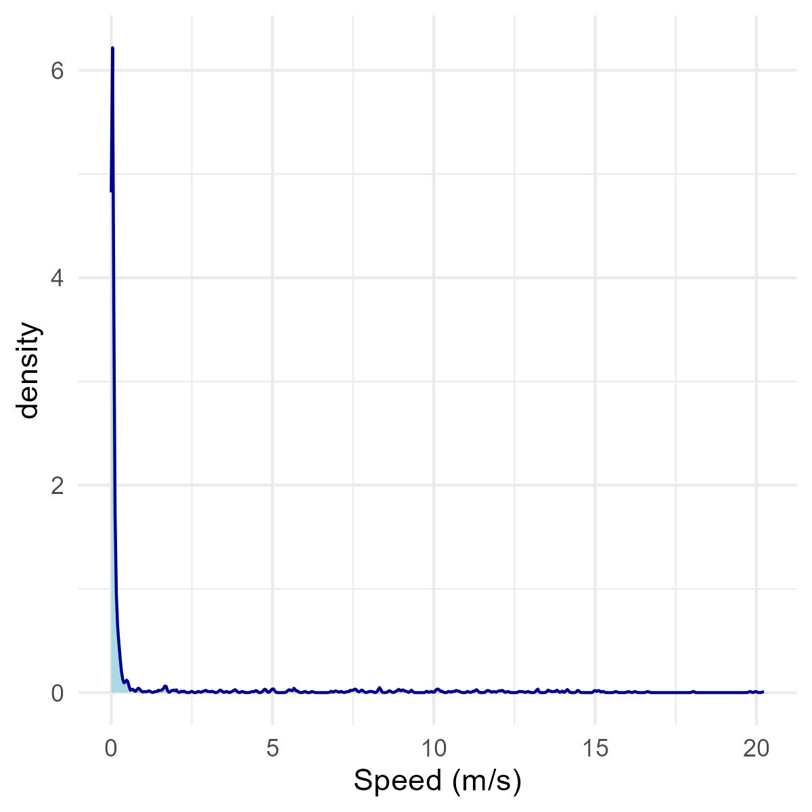

#devtools::install_github("MiriamLL/sula")Speed
r
biologging
Y2022
How to calculate speed using time and distance between points.
Intro
This post is about how to calculate the speed between points.
This is useful for example when you want to:
- Classify behavioral states of the individuals
- Clean errors in locations
See examples on the literature at the bottom of this post.
In this post we will calculate distance between points, then the time between those points, and finally the speed.
Data 📖
To do this exercise, load data from the package ‘sula’.
For accessing the data, you need to have the package installed.
To install:
library(sula)The data is from 10 tracked individuals.
my_locs<-(GPS_raw)Select one individual for the exercise.
library(tidyverse)ID01<-my_locs %>%
filter(IDs=='GPS01')Distance 📏
Lets select the columns of interest
ID01_coords<- ID01[,c('Longitude','Latitude')]Convert the data frame into a spatial object
ID01_spatial <- sp::SpatialPointsDataFrame(coords = ID01_coords, data = ID01)Use the corresponding CRS (Coordinate Reference System).
Note that the CRS might change according to your study area.
sp::proj4string(ID01_spatial)= sp::CRS("+init=epsg:4326")Using the function distm from the package geosphere to calculate the distance between points.
ID01_distance<-sapply(2:nrow(ID01_spatial),
function(i){geosphere::distm(ID01_spatial[i-1,], ID01_spatial[i,])})To add this information to your original data frame:
ID01_distance<-c(NA,ID01_distance)To transform it to kilometers:
ID01$dist_km<-ID01_distance/1000Time ⏰
Lets select the columns of interest
Times<-paste(ID01$DateGMT,ID01$TimeGMT)Transform to the corresponding time formart
Times<-as.POSIXct(strptime(Times,"%d/%m/%Y %H:%M:%S"),"GMT")✋🏽 Make sure it did not return NAs, otherwise check the format you used.
In this example, we will create a new column with the time using the function lag.
Lag<-lag(Times)Then, we will include a column with the original time (in time format) and the lag as another column on the original data frame.
ID01$Time1<-Times
ID01$Time2<-LagNow, using the function difftime, we can calculate the time difference between those columns.
In units you can select “secs”, “mins”, “hours”,“days”, “weeks”.
ID01$time_dif<-as.numeric(difftime(ID01$Time1,ID01$Time2, units="mins"))You can also transform it to hours, with basic conversion.
ID01$time_hr<-as.numeric(ID01$time_dif/60)Speed 🥏
As simple as speed = distance ÷ time
ID01$speed<-ID01$dist_km/ID01$time_hrPlots
To visualize the speed from the animal you can also create plots.
ggplot(ID01, aes(x=speed)) +
geom_density()+
theme_minimal()+
xlab('Speed (km/hr)')Also, you can modify the plots according to the units you want to use. Here in m/s.
ggplot(ID01, aes(x=speed*0.277778)) +
geom_density(color="darkblue", fill="lightblue")+
theme_minimal()+
xlab('Speed (m/s)')
Further reading 👩🏽🏫
Speed Wikipedia definition
Converters Speed-converter
Some papers that use speed for different pourposes:
Raya Rey et al. 2010 “…we identified three phases based on sinuosity and speed of the trajectory…”
Nourani et al. 2022 “…all data were filtered by speed to ensure that the position information represented period of flight…“
I hope this helped you!